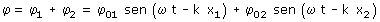
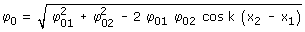

| Interferencias

Se puede demostrar que esta suma vale: φ = φ0 sen (ωt + Φ) siendo Φ la fase inicial y φ0 la amplitud que viene dada por  La amplitud de oscilación depende de la diferencia de camino de cada onda hasta el punto (δ: = x2 - x1) Casos extremos Si δ es múltiplo impar de la semilongitud de onda la amplitud de oscilación es mínima (Interferencia destructiva) Si δ es múltiplo par de la semilongitud de onda la amplitud de oscilación es máxima (Interferencia constructiva) |